Telling a story
- arXiv is a preprint server originally aimed at physicists
- It started to become popular with biologists (arXiv q-bio), but interest all of a sudden seemed to level off.

Julia Fukuyama
Why did this happen? Appearance of another preprint server that was more popular:
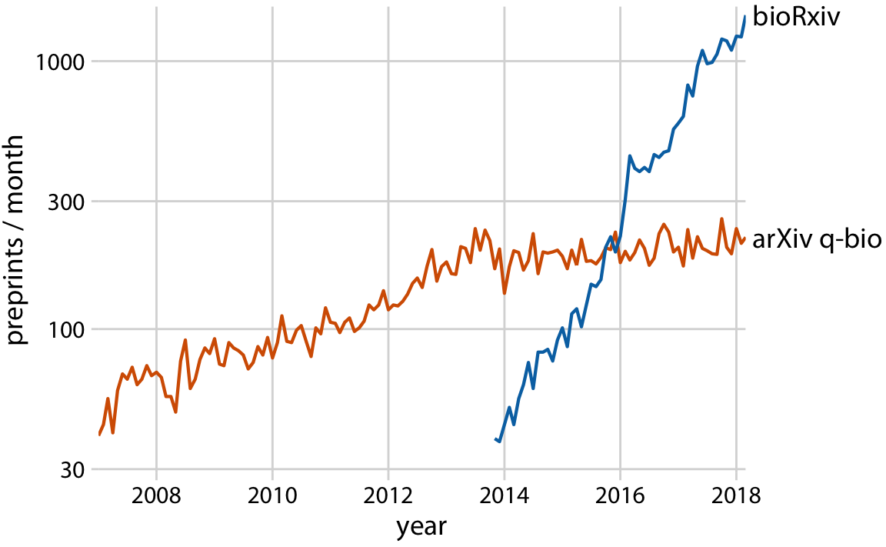
## Joining with `by = join_by(carrier)`
## `summarise()` has grouped output by 'name'. You can override using the `.groups` argument.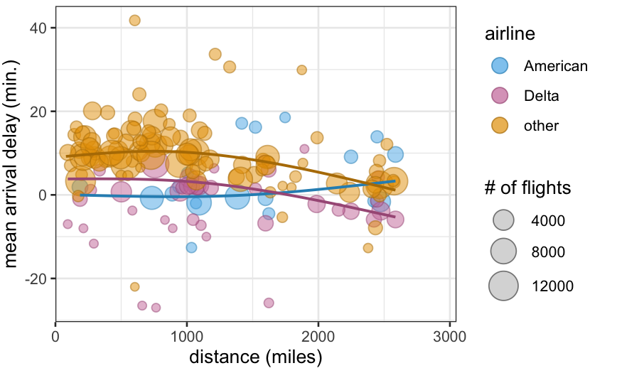
Longer flights have longer average delays for American Airlines….
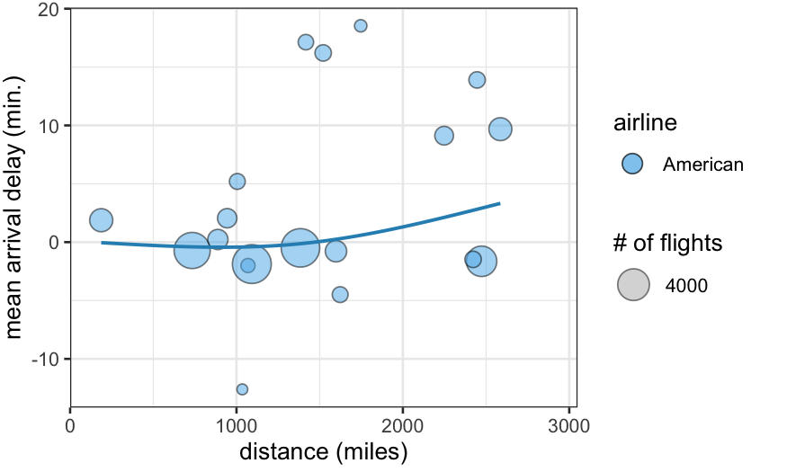
But not for Delta
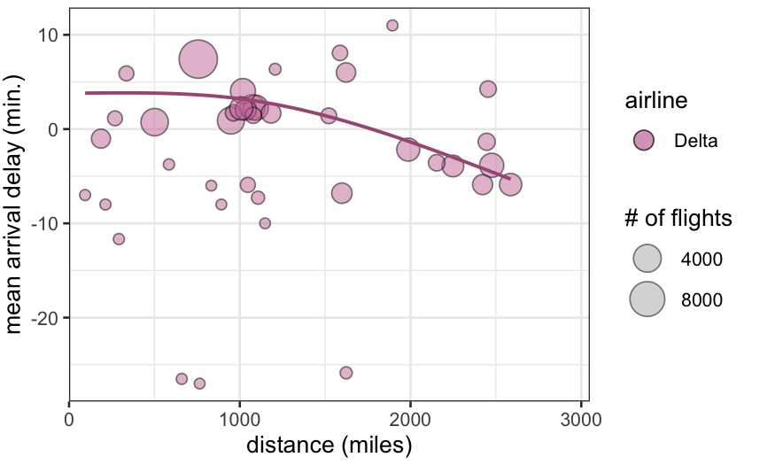
In fact, most airlines have the opposite trend: longer flights tend to be less delayed for Delta and for all the other airlines:
We have a data set containing clinical data on patients who were about to receive a radical prostatectomy. The relevant variables are:
Variables about sizes:
lcavol: log cancer volumelweight: log prostate weightlbph: log of the amount of benign prostatic
hyperplasiaVariables about the individual:
age: Age in yearsVariables measured by the pathologist:
svi: Seminal vesicle invasion, a measure of how
advanced the cancer is.lcp: log of capsular penetrationgleason: A numeric vector giving the Gleason
score. In theory can range from 2-10, in practice ranges from
6-10.pgg45: Percent of cells with Gleason score 4 or 5.The “response” variable:
lpsa: log of the concentration of prostate-stimulating
antigen.We are primarily interested in lpsa, which is used as a
marker for prostate cancer. We would like to know whether and how it is
related to the other variables we have available to us.
## lcavol lweight age lbph
## Min. :-1.3471 Min. :2.375 Min. :41.00 Min. :-1.3863
## 1st Qu.: 0.5128 1st Qu.:3.376 1st Qu.:60.00 1st Qu.:-1.3863
## Median : 1.4469 Median :3.623 Median :65.00 Median : 0.3001
## Mean : 1.3500 Mean :3.629 Mean :63.87 Mean : 0.1004
## 3rd Qu.: 2.1270 3rd Qu.:3.876 3rd Qu.:68.00 3rd Qu.: 1.5581
## Max. : 3.8210 Max. :4.780 Max. :79.00 Max. : 2.3263
## svi lcp gleason pgg45
## Min. :0.0000 Min. :-1.3863 Min. :6.000 Min. : 0.00
## 1st Qu.:0.0000 1st Qu.:-1.3863 1st Qu.:6.000 1st Qu.: 0.00
## Median :0.0000 Median :-0.7985 Median :7.000 Median : 15.00
## Mean :0.2165 Mean :-0.1794 Mean :6.753 Mean : 24.38
## 3rd Qu.:0.0000 3rd Qu.: 1.1787 3rd Qu.:7.000 3rd Qu.: 40.00
## Max. :1.0000 Max. : 2.9042 Max. :9.000 Max. :100.00
## lpsa train
## Min. :-0.4308 Mode :logical
## 1st Qu.: 1.7317 FALSE:30
## Median : 2.5915 TRUE :67
## Mean : 2.4784
## 3rd Qu.: 3.0564
## Max. : 5.5829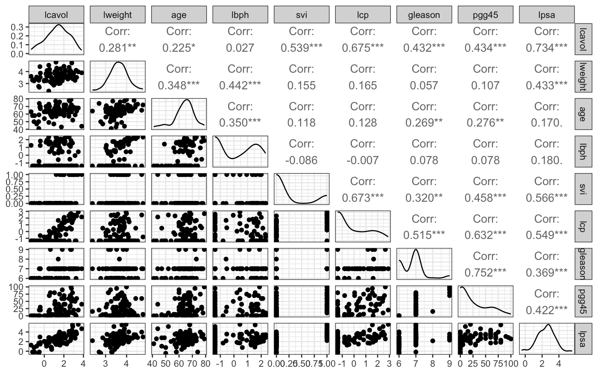
From the ggpairs plot, we see that the distributions of
the variables are reasonably symmetrical, not that skewed, and that
there is at least some relationship between most of the variables and
lpsa.
As a first step, we can fit a linear model with all the predictors and look at the results. We see that a lot of the coefficients are within the margin of error of zero, which suggests to us that a model with fewer predictors would do better.
prostate_lm = lm(lpsa ~ ., data = prostate)
prostate_coefs = tidy(prostate_lm, conf.int = TRUE)
ggplot(prostate_coefs[-1, ], aes(x = estimate, y = term, xmin = conf.low, xmax = conf.high)) +
geom_point() + geom_errorbarh() + geom_vline(xintercept = 0)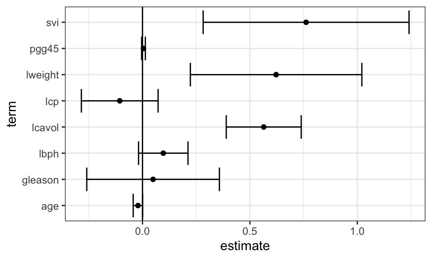
library(leaps)
prostate_best_subset = regsubsets(lpsa ~ ., data = prostate)
summary(prostate_best_subset)$which## (Intercept) lcavol lweight age lbph svi lcp gleason pgg45
## 1 TRUE TRUE FALSE FALSE FALSE FALSE FALSE FALSE FALSE
## 2 TRUE TRUE TRUE FALSE FALSE FALSE FALSE FALSE FALSE
## 3 TRUE TRUE TRUE FALSE FALSE TRUE FALSE FALSE FALSE
## 4 TRUE TRUE TRUE FALSE TRUE TRUE FALSE FALSE FALSE
## 5 TRUE TRUE TRUE TRUE TRUE TRUE FALSE FALSE FALSE
## 6 TRUE TRUE TRUE TRUE TRUE TRUE FALSE FALSE TRUE
## 7 TRUE TRUE TRUE TRUE TRUE TRUE TRUE FALSE TRUE
## 8 TRUE TRUE TRUE TRUE TRUE TRUE TRUE TRUE TRUEThis shows us that the best one-predictor model uses
lcavol, the best two-predictor model uses
lcavol and lweight, the best three-predictor
model uses lcavol, lweight, and
svi, and so on.
We can use this set of models as guidance for what variables to include, and build up an interpretable model using some of the tools we’ve seen earlier in the course.
regsubsets also does forward and backward stepwise
regression. In this case they all give the same results.
prostate_forward = regsubsets(lpsa ~ ., data = prostate, method = "forward")
summary(prostate_forward)$which## (Intercept) lcavol lweight age lbph svi lcp gleason pgg45
## 1 TRUE TRUE FALSE FALSE FALSE FALSE FALSE FALSE FALSE
## 2 TRUE TRUE TRUE FALSE FALSE FALSE FALSE FALSE FALSE
## 3 TRUE TRUE TRUE FALSE FALSE TRUE FALSE FALSE FALSE
## 4 TRUE TRUE TRUE FALSE TRUE TRUE FALSE FALSE FALSE
## 5 TRUE TRUE TRUE TRUE TRUE TRUE FALSE FALSE FALSE
## 6 TRUE TRUE TRUE TRUE TRUE TRUE FALSE FALSE TRUE
## 7 TRUE TRUE TRUE TRUE TRUE TRUE TRUE FALSE TRUE
## 8 TRUE TRUE TRUE TRUE TRUE TRUE TRUE TRUE TRUEprostate_backward = regsubsets(lpsa ~ ., data = prostate, method = "backward")
summary(prostate_backward)$which## (Intercept) lcavol lweight age lbph svi lcp gleason pgg45
## 1 TRUE TRUE FALSE FALSE FALSE FALSE FALSE FALSE FALSE
## 2 TRUE TRUE TRUE FALSE FALSE FALSE FALSE FALSE FALSE
## 3 TRUE TRUE TRUE FALSE FALSE TRUE FALSE FALSE FALSE
## 4 TRUE TRUE TRUE FALSE TRUE TRUE FALSE FALSE FALSE
## 5 TRUE TRUE TRUE TRUE TRUE TRUE FALSE FALSE FALSE
## 6 TRUE TRUE TRUE TRUE TRUE TRUE FALSE FALSE TRUE
## 7 TRUE TRUE TRUE TRUE TRUE TRUE TRUE FALSE TRUE
## 8 TRUE TRUE TRUE TRUE TRUE TRUE TRUE TRUE TRUE## [1] TRUE## [1] TRUEWe start off looking at the best one-predictor model, with
lcavol predicting lpsa.
## `geom_smooth()` using method = 'loess' and formula = 'y ~ x'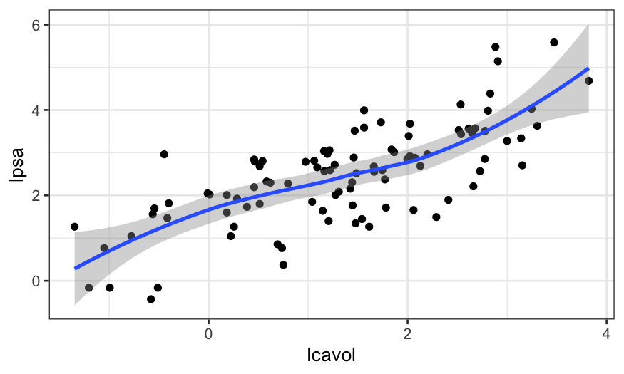
We see that the relationship is pretty close to linear (a line would
go through the entire confidence band of the smoother), and so we’re ok
with using a linear function of lcavol to predict
lpsa.
If there had been a major non-linearity here, we would have wanted to ditch the linear modeling approach and do something non-parametric, maybe loess.
Then we can move to the two-predictor model, and see what the
relationship between lcavol, lweight, and
lpsa looks like.
We can make a coplot to examine the relationship between
lpsa and lcavol, with lweightas
the given variable
ggplot(prostate, aes(x = lcavol, y = lpsa)) + geom_point() + geom_smooth(span = 1) +
facet_grid(~cut_number(lweight, n = 3))## `geom_smooth()` using method = 'loess' and formula = 'y ~ x'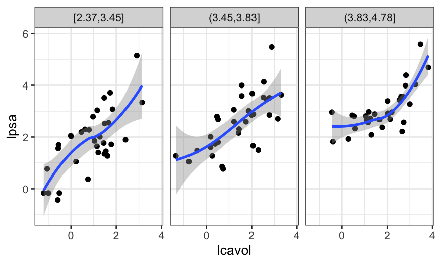
Here it seems like there is some non-linearity, but only for the
observations with a high value of lweight.
If we had a lot more observations, this might prompt us to move to loess, but since the non-linearity is based on just a few points, we want to see first whether the non-linearity shows up in other graphs as well.
The best three-predictor model identified by leaps
included svi in addition to lcavol and
lweight, so we next look at those four variables
together.
svi is binary and there are only 21 cases where
svi is equal to 1, we can’t make a lot of facets and we
don’t trust curves that much.
##
## 0 1
## 76 21prostate$svi = recode(prostate$svi, `1` = "Yes", `0` = "No")
ggplot(prostate, aes(x = lcavol, y = lpsa, group = svi, color = svi)) +
geom_point() +
geom_smooth(method = "lm", se = FALSE) + facet_wrap(~ cut_number(lweight, n = 2))## `geom_smooth()` using formula = 'y ~ x'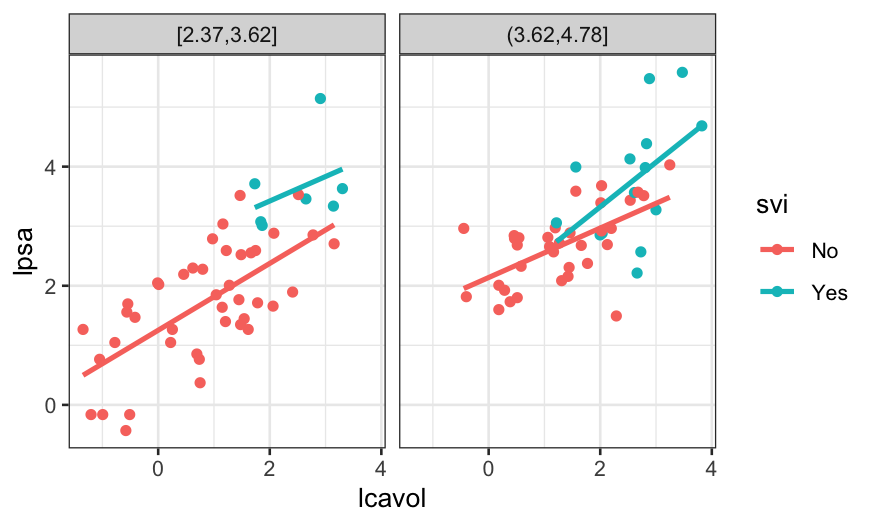
The different slopes suggest an interaction, but again, we don’t have that much data.
Next we try looking at the predictors from the four-predictor model. This is pushing the limits of the number of variables we can look at all at once, but we will try.
We can look at the relationship between lpsa,
lcavol, and svi, with lweight and
lbph as the given variables.
ggplot(prostate, aes(x = lcavol, y = lpsa, group = svi, color = svi)) +
geom_point() +
geom_smooth(method = "lm", se = FALSE) +
facet_grid(cut_number(lweight, n = 2) ~ cut(lbph, breaks = c(-2, -1, 3)))## `geom_smooth()` using formula = 'y ~ x'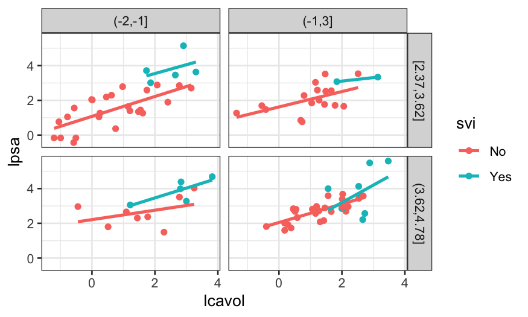
Based on this visualization, we might not be confident about an interaction: the blue lines vary in slope, but there’s based on very small samples. The red lines have different heights but are similar in slope.
We’re not always required to find a “best” model, and even if we were we can decide on what best means subjectively.
If you wanted to fit a linear model with lcavol,
lweight, and svi as predictors plus
interactions, you’re free to do so and then call that “best” because of
the complexity you can get out of a relatively small number of
variables.
We can also check what the model selection criteria tell us about how many variables to use:
cp_df = data.frame(value = summary(prostate_best_subset)$cp,
n_params = seq_along(summary(prostate_best_subset)$cp),
type = "Cp")
bic_df = data.frame(value = summary(prostate_best_subset)$bic,
n_params = seq_along(summary(prostate_best_subset)$bic),
type = "BIC")
model_selection_criterion_df = rbind(cp_df, bic_df)
ggplot(model_selection_criterion_df, aes(x = n_params, y = value)) +
geom_point() + facet_wrap(~ type, scales = "free_y")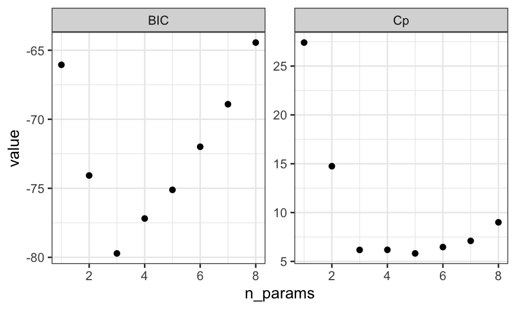
Even though the lowest value of Cp is for 5 predictors, the Cp value for 3 predictors is very close to the value for 5 predictors and BIC has a strong minimum at 5 predictors. The two plots suggest that if we don’t believe we need any interactions, we should use a model with an intercept and two predictors.
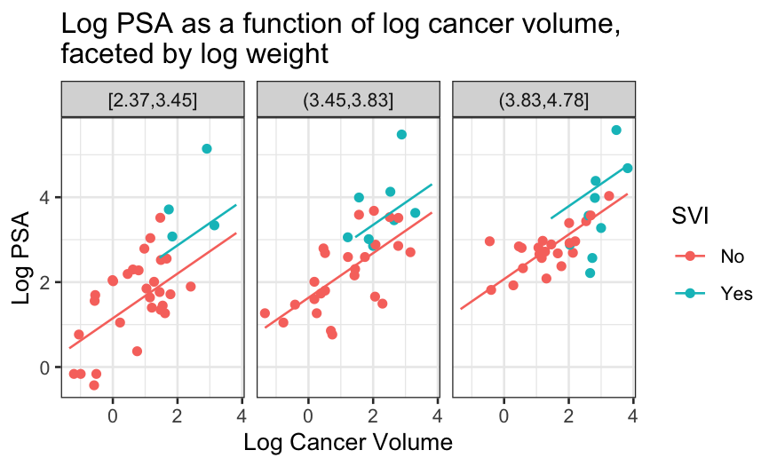
This set of images is more “for the postdoc” and less “for the generals,” but sometimes they are your audience too.
Cancer volume is the most important determinant of PSA:
ggplot(prostate, aes(x = lcavol, y = lpsa)) + geom_point() +
scale_x_continuous("Log cancer volume") + scale_y_continuous("Log PSA")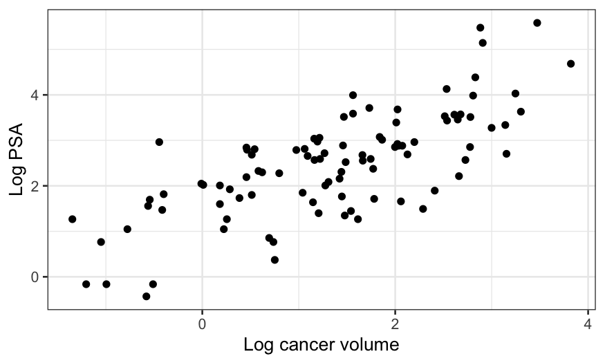
Cancer weight is not as important on its own, but cancer weight is also important even when we take into account cancer volumes, particularly for low cancer volumes:
ggplot(prostate_with_lweight_bins, aes(x = lweight, y = lpsa, color = lcavol_bins)) +
geom_point() + facet_wrap(~ lcavol_bins, scales = "free_x") +
scale_color_discrete("Cancer volume") +
scale_x_continuous("Log cancer weight") + scale_y_continuous("Log PSA")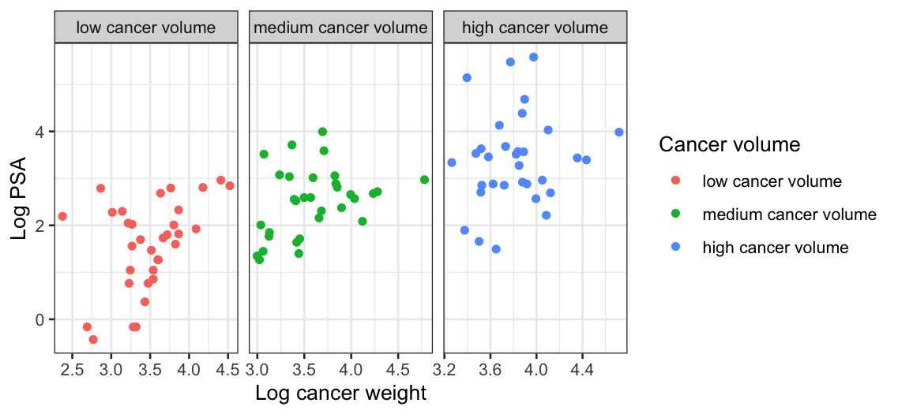
There is a suggestion that SVI has an effect on PSA as well, even taking into account cancer weight and volume, but even though we get a positive term in the linear model the effect is less consistent and convincing.
ggplot(prostate_with_lweight_bins, aes(x = lcavol, y = lpsa, color = svi)) +
geom_point() +
facet_wrap(~ lweight_bins_labeled) +
geom_line(aes(x = lcavol, color = svi, y = .fitted),
data = prostate_fits_on_grid) +
scale_color_discrete("SVI") +
scale_x_continuous("Log cancer volume") + scale_y_continuous("Log PSA")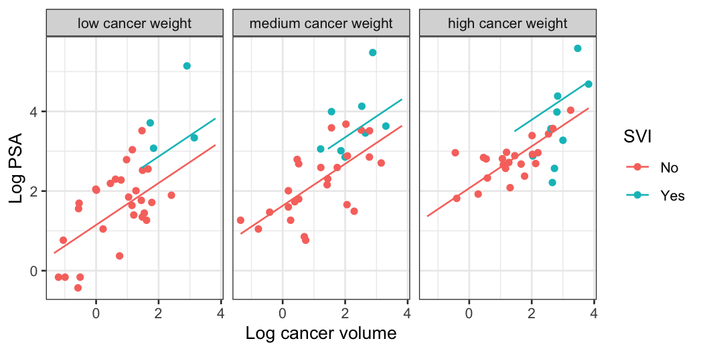